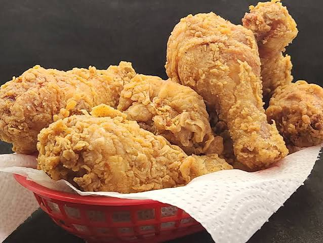

Fried Rice

Description
Fried rice is a simple and tasty rice dish.
Ingredients
- Rice
- Eggs
- Carrots
- Green onions
- Soy sauce
Steps
- Cook the rice.
- Cook the vegetables.
- Add the eggs.
- Add the rice and soy sauce.
- Stir and cook until done.
Back to Home